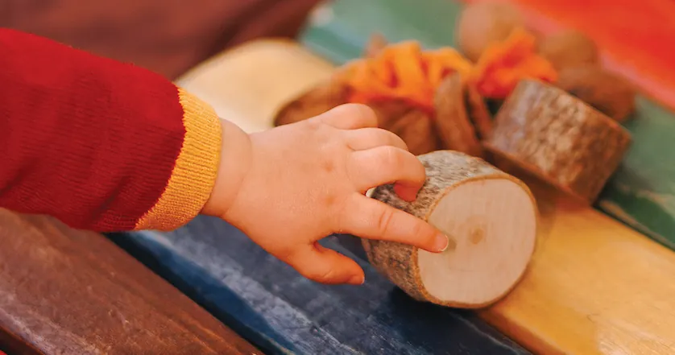

0–3ans
Oreilles en Tendresse
Prolonger et enrichir la découverte du monde sonore des tout-petits : comptines, chansons, bruits de bouche, objets sonores et instruments. De 3 mois à 1 an révolu au 31 juillet, avec un adulte.
- 45 min
- 8 enfants par cours
- 64 à 80 fr. par mois
Eaux-Vives : lundi 11 h (âges mixtes) et 15 h, mardi 9 h 30 et 11 h (âges mixtes), vendredi 13 h 30.
